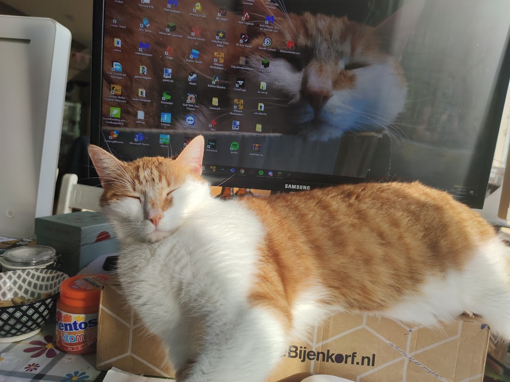
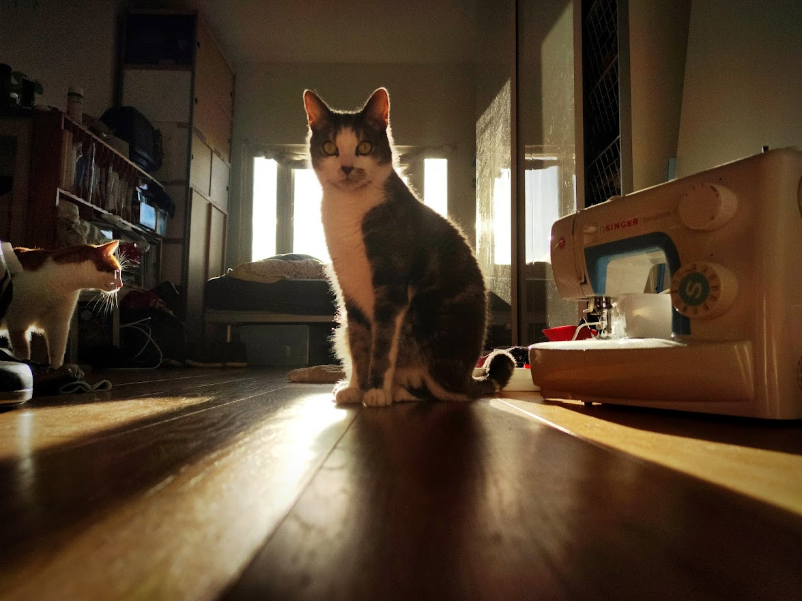
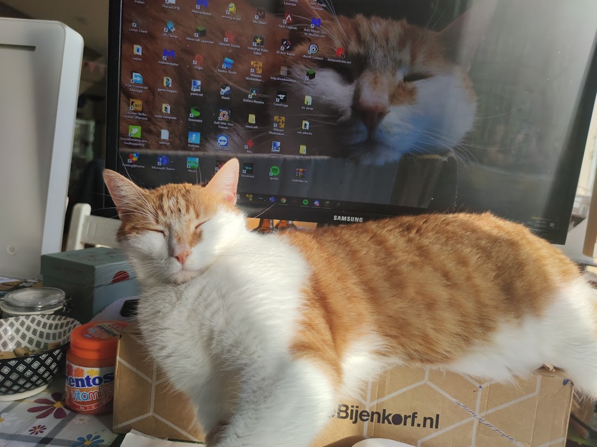
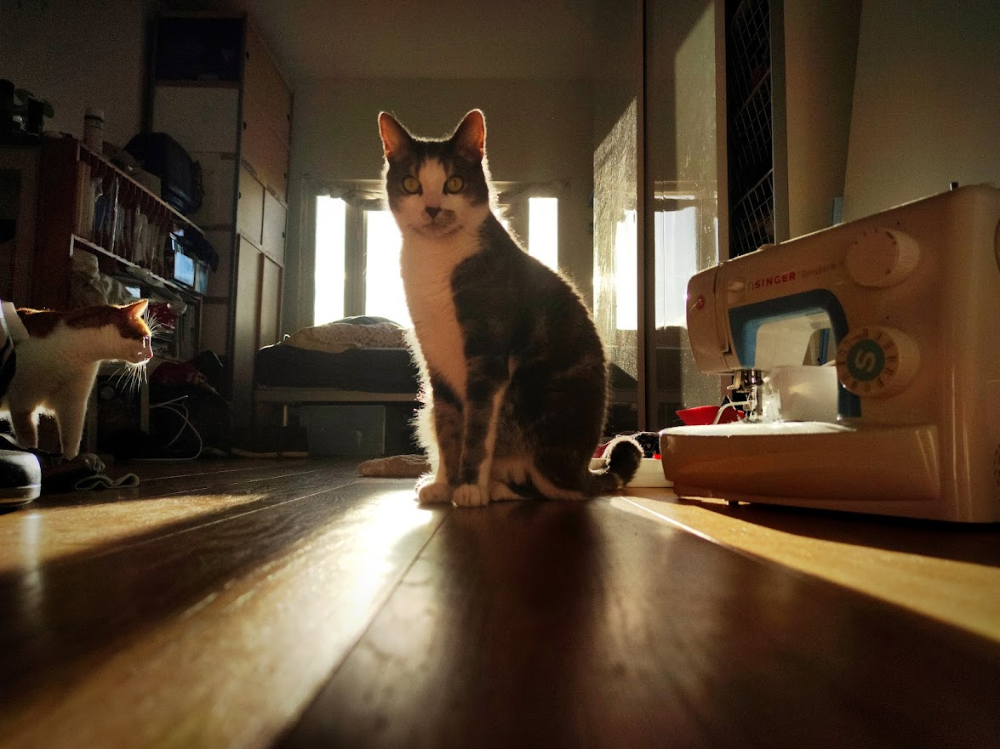

Ik woon samen met mijn vader moeder zusje en twee katten Daan en Pip
 
Ik ben Joost
ik ben 15 jaar en word komende november 16
Ik kom uit Amsterdam en daar woon ik ook
Ik zat op de Dongeschool in de Rivierenbuurt
Mijn tandenborstel is wit met groen
Mijn lievelingskleur is rood
Ik woon samen met mijn vader moeder zusje en twee katten Daan en Pip
 
Afgelopen vakantie ben ik naar Friesland gevaren op de zeilboot van mij en mijn familie.
En ik heb een week gezeild in vinkeveen in een wat kleiner bootje.
Ik heb natuurlijk ook veel series gekeken en gezwommen
Na school of in het weekend stel ik huiswerk eigenlijk zo ver mogelijk uit :)
En dan ga ik series kijken, code of minecraft.
Een van de laatste series die ik uit heb gekeken was Breaking Bad
Ik speel natuurlijk ook spellen, zoals Minecraft en Valorant
In de zomer zeil ik, ik kan "goed" zeilen in een Fusion en in een catamaran
en in de winter schaats ik 3x per week
Ik geef op zaterdagochtend schaatsles aan kinderen
Ik zit op Het Amsterdams Lyceum
Ik doe Latijn met een n&t, N&g pakket
Ik vind logischere vakken zoals nat en wis leuker/makkelijker, omdat dat logischers is
Ook zit ik in de aula commissie en doe soms licht of geluid voor voorstellingen
Ik kan dus een beetje zeilen en schaatsen
Ik schaats al sinds ik 2 jaar oud ben
Mijn club is de Poelster en die ligt in Amstelveen
Ik vind short track leuker dan langebaan, omdat de krachten op je groter lijken, en dat is leuk
Ik zeil al sinds mijn 6e bij Zeilschool De Vinkeveense Plassen
De catamaran vind ik de leukste boot, omdat hij best lastig is, maar als je het kan haal je iedereen in.
Op school doe ik een natuur profiel
Biologie, Scheikunde, Natuurkunde & Wis B
Ik vind Bio het minst leuk van deze vakken, omdat de antwoorden soms een beetje subjectief zijn.
Scheikunde is prima zolang je het bijhoud.
Ik ben goed in Natuurkunde vorig jaar eindigde ik met een 94 :) .
Ik vind wiskunde redelijk makkelijk, omdat als ik iets minder goed snap, ik een programmaatje in python schrijf die het snel oplost.
En dan begrijp ik het.
Ik programeer vooral in python, omdat dat makkelijker is om te begrijpen, maar ik vind het minder mooi om met dicts te werken.
Ik heb verschillende projecten in python, van api request parsen om rijk te worden in een spel
Tot een physics engine die het zonnestelsel berekend (of als er 2 zonnen zouden zijn) met pygame
Of een simulation framework om makkelijk data te simuleren met pygame.
Mijn git is Mijn Github
Ik doe soms samen met Jonathan code projectjes
Sinds kort maak ik ook als werk sites in Vue voor een oud-docent met html, css en javascript.
Ik ben nu bezig met kijken wat voor soort projecten ik leuk vind.
Kijken naar verschillende programma's en talen, zoals:
scratch, blender, davinci resolve, minecraft datapacks, python simulators, pythons api consumers & Vue sites servers.
Ik vind de python dingen tot nu toe het leukst, omdat er met relatief weinig code heel veel werkt.
Ik codeer nu voornamelijk in Vscode, omdat die extensions heel fijn en snel zijn.
Ik wil denk ik iets technisch doen
Op Youtube kijk ik vaak wiskunde of natuurkunde filmpjes
Ik vind dynamische neural networks interessant, omdat ze zo op echt leven lijken
Neural Networks vind ik soiezo heel leuk, omdat ze dingen "bedenken" in de hidden layers die niemand begrijpt
Er was laatst een neural netwerk getraind op echte dingen die vallen en botsen, en het netwerk moest voorspellen wat er daarna ging gebeuren
Het lukte, alleen toen de onderzoekers keken naar hoe het netwerk op het antwoord kwam, zagen ze dat het netwerk compleet onbekende constanten had gevonden, die dus wel werken
Maar een keer een product ontwerpen lijkt mij ook leuk.
Eigenlijk heb ik nog niet echt een idee wat ik wil gaan doen
Ik ga gewoon een beetje mee met wat er op mijn pad komt.
Maar mij lijkt Data Science, Technische Universiteit Eindhoven of iets met natuurkunde wel leuk om te studeren